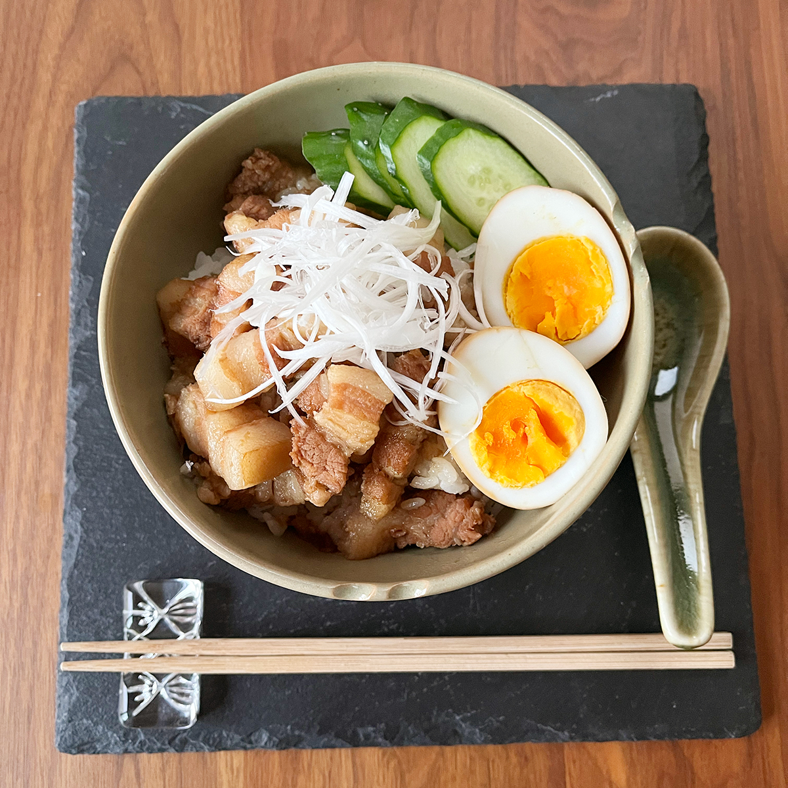

家族が喜ぶルーロー飯レシピ！
パパイヤパウダーに漬け込むことで
とろっとろの柔らかいお肉になり
美味しくいただけます。
青パパイヤの酵素の力で
お肉が柔らかくなり
煮込み時間も約15分！
簡単、美味しい、時短レシピです。
材料
| 豚バラ肉 500g | ゆで卵 4個 |
| パパイヤパウダー 大さじ1と1/2 | |
| A：みりん 60㏄（大さじ4） | 白髪ねぎ 適量 |
| A：醤油 60㏄（大さじ4） | |
| A：オイスターソース 50㏄ | きゅうり 適量 |
| A：砂糖 12g（小さじ4） | |
| A：おろしにんにく 2かけ分 | |
| A：おろししょうが 大さじ1 | |
| A：水 100㏄ |
作り方
1.豚バラ肉を1cm幅でカットして、パパイヤパウダーをまぶして20分ほど置く。
（長時間漬け込むと、豚肉の繊維が崩れてボロボロになるので注意。）
2.鍋に60℃ほどのぬるま湯を入れて、5分ほど茹でる。一旦火を止めて、鍋のお湯を流す。
3.鍋に茹でた豚肉とゆで卵、Aの調味料を入れ、落とし蓋として乗せ、中火で10分煮る。
（落とし蓋はアルミホイルやクッキングペーパーでOK！）
4.塩、こしょうで味を調え、盛り付けて完成！
お好みで五香粉、シナモンパウダー、ホアジャン（花椒）、八角などを入れると、本格的な味に仕上がる。
※レシピの無断転載等は固くお断りさせて頂きます。